Specifics with Docker, Influx, and Grafana 📈
Grafana/Influx Complications 😵💫
Grafana and Influx are both extensive services that have their own properties and customizations available to you. This page’s aim is to inform you of important details about each of these tools which may affect decisions in how you want to run experiments or write code.
In our API, Grafana and Influx are both created using Docker containers, but in the case that you want to run these services independently, you will want to cater your code around this difference.
Docker Details 🐳
Data Storage 🛖
Because Docker is creating the container for Influx, the data is stored in a Docker Volume, rather than Influx’s own storage space. Depending on the sample rate of the device you are using, this data can fill up very quickly. Please keep in mind that if the retention policy below is not set up for your system, the disk might get filled up with time series data.
{kind=link}
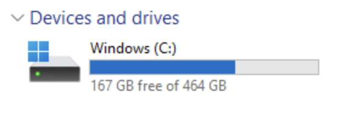
If you are on Windows, this data fills up in a virtual disk. The virtual disk should be located under C:\Users\<username>\AppData\Local\Docker\wsl\disk\docker_data.vhdx. Unfortunately, when space is allocated to this disk, even if your Docker Volume is deleted, the space in Windows will not be restored. This is because space allocated to the virtual disk will not shrink unless you manually shrink it (through the terminal), or delete it (after closing WSL).
{kind=link}
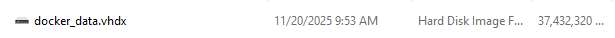
The steps below outline how to delete or shrink the virtual disk
Other Docker Tools ⚒️
Docker has different commands and tools to keep track of containers and volumes created. On Linux, you’ll need to use the Docker commands in the terminal to access these, but on Windows, there are tabs to help keep track of this information.
In order to see which containers are running, you can do the following depending on your system
For Windows on Docker Desktop:
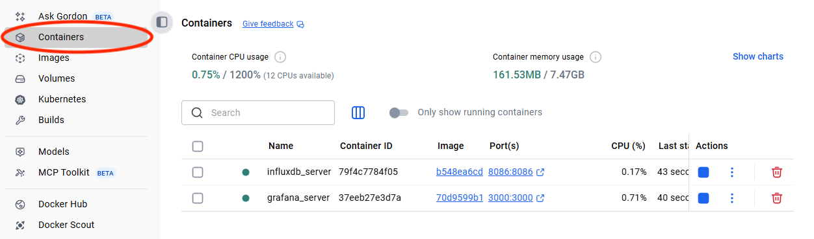
For Linux systems or on a bash shell terminal:
$ docker ps
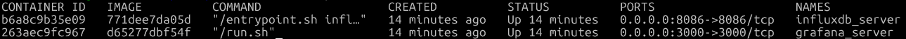
In order to see which volumes exist and are storing data
For Windows on Docker Desktop:
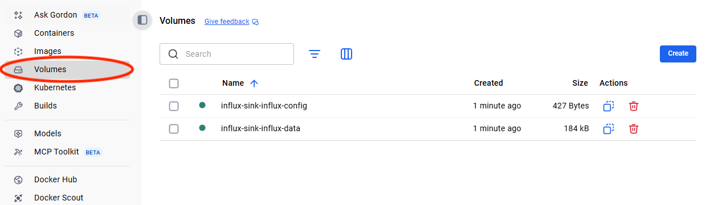
For Linux systems or on a bash shell terminal:
$ docker volume ls
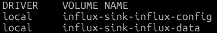
Influx Details ℹ️
Retention Policy ⌛
Influx has a “retention” policy that it uses in order to ensure that the computer does not fill up its entire disk space. It removes data if the data has been stored for over the set time period (i.e if the policy is set to 2 days, influx will remove data after it has become 2 days old).
Influx will remove data in batches. It does this by creating “shards”, which group data together over a specific time period. For example, if the shard length is 1 hour long, then data will be grouped together in that hour and be deleted together after the time retention expiry. Shard length is determined by how long the retention policy is set to, which you can see below:
{kind=link}
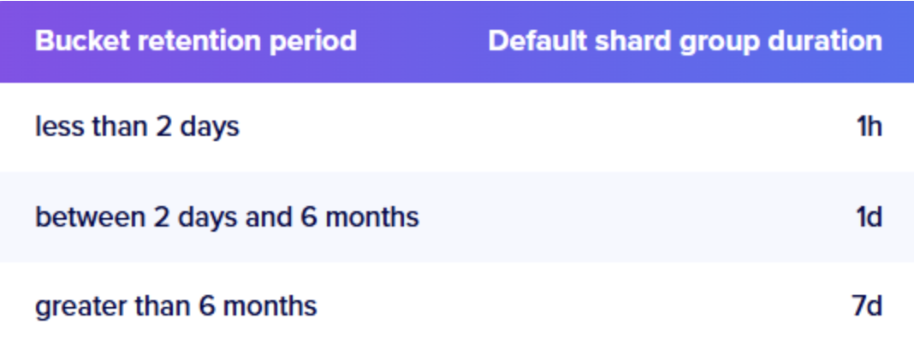
From Terraform, this policy can be edited inside of the influxdb.tf file, under the environment variables. By default, we set the retention policy to 47 hours, which means that the shard length is 1 hour.
{kind=link}
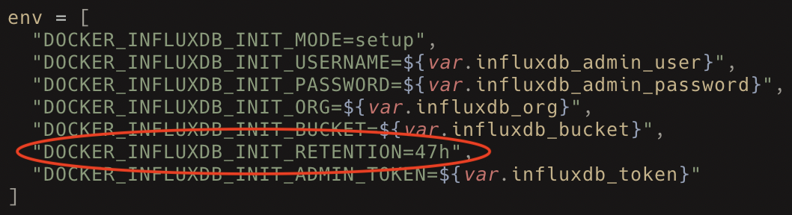
Creating Grafana Dashboards 📉
During the creation of the Grafana container, Grafana looks inside of the infra/grafana/dashboards folder for JSON files to use as dashboards. Any JSON file that fits the format of a grafana dashboard here will be generated and shown on the UI.
{kind=link}
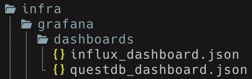
{kind=link}
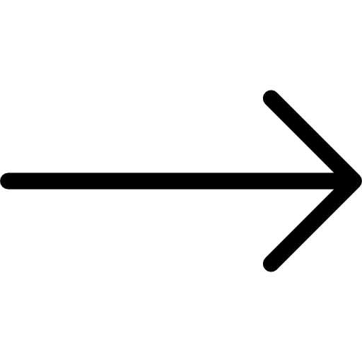
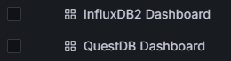
If you want to create your own dashboard, there is a folder where template JSON files are held for a basic 8206HR and 8401HR. You can copy any of these files to the infra/grafana/dashboards folder, and edit the specifics (title, description, etc.) for your needs.
Note
These can be pretty finicky and need to be precise.
{kind=link}
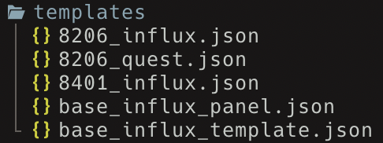
Customizing Dashboards for Your Needs 🎉
Editing a Grafana dashboard is not too difficult. After loading up your dashboard on Grafana, you can change different settings of the dashboard in the “edit” mode. To enter edit mode, just press the button in the top right corner.
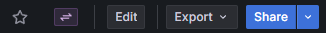
After entering this mode, you are free to move panels, create new panels, and edit dashboard settings. After you are finished, you can save the dashboard by clicking the “Saved dashboard” button, and then either copying the JSON to clipboard or saving the JSON to a file.
{kind=link}
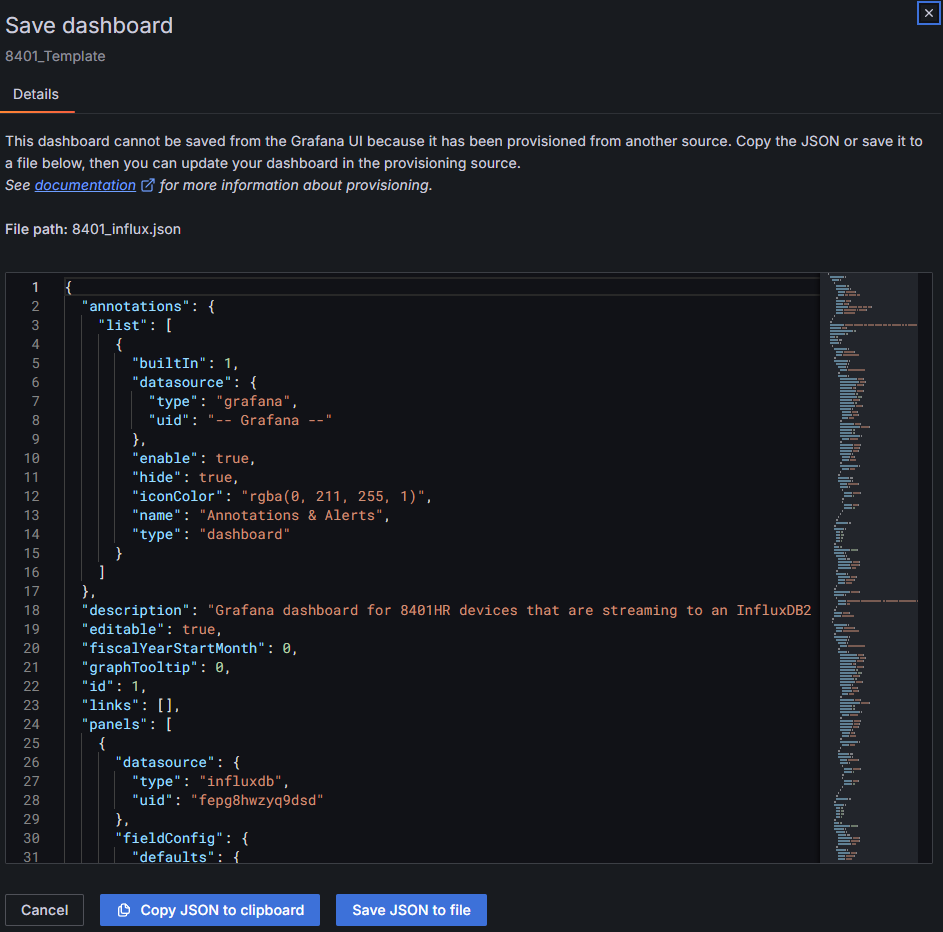
Placing this JSON file in the infra/grafana/dashboards folder will allow Grafana to provision it on startup, meaning that it will automatically load in the Grafana GUI (with all your changes!) when starting the container through Terraform.
Editing a Panel ⬛
In your dashboard, you can edit panels by clicking the top right menu button on a panel, and then clicking “Edit”.
{kind=link}
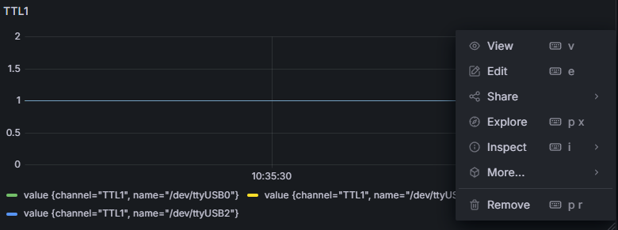
Each panel queries information out of a database and can present it in various ways. If you want to edit how it queries (what information it looks for), you can change that inside of the query editor. Depending on which database you are querying from (by default Influx), you may need to structure your query based on the query language that the database supports.
{kind=link}
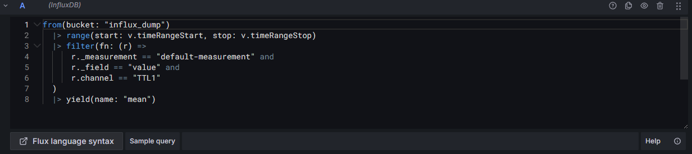
On the right-hand side, there are settings to change how the data is displayed. By default, we set each panel to show a time series (data flowing in through time), but other options include vizualizations such as a bar chart or a table (which will show more precise timestamps).
{kind=link}
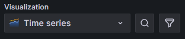
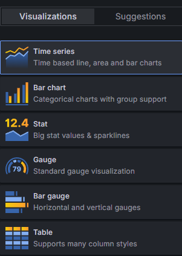
Remember, after you edit the panels, if you want to save the dashboard, that you must export it as a JSON file or copy it to your clipboard (and move it somewhere else).
JSON Specifics 📁
In the case you want to directly edit the dashboard from the JSON file, there are a couple of key parts which you can change. The JSON files for these dashboards can be pretty long, but upon closer inspection you can find that each part of the dashboard has its own section. For example, what you can see below is the beginning and end of a single panel in the dashboard.
{kind=link}
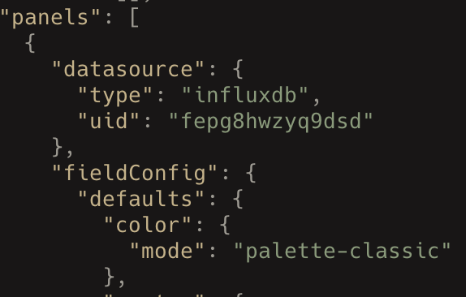
{kind=link}
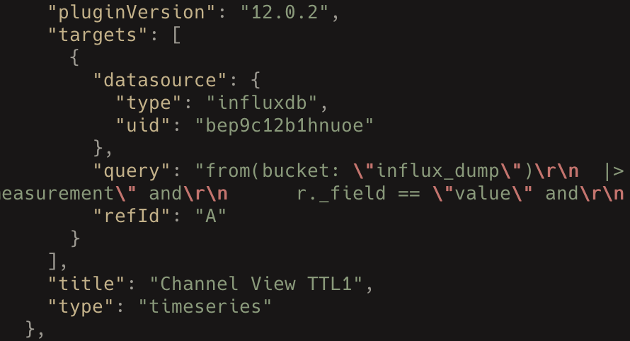
At the bottom of the file, you will find a “title” line, which stores a string. Changing this string will update the title for your dashboard.
{kind=link}
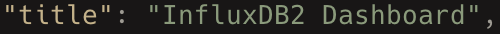
At the top of the file, you will find a “description” line, which stores a string. Changing this string will update the description of your dashboard.
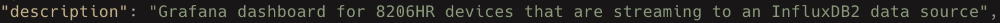
Automated Creation in Python 🤖
Currently, there is a little bit of support for automatically creating dashboards from pod devices in Python. The code for it currently does not exist in the Morelia API, but rather exists in the Morelia/infra/grafana_json.py file.